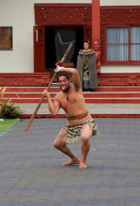
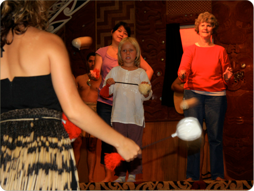

Maoridans
Vi har besøgt en landsby, hvor de folk der har boet på New Zealand i længst tid - Maorier, hedder de, viser dans, vævning og hvordan de skærer i træ.

Indenfor i deres mødehus, hvor vi ikke måtte have sko eller hatte på, kom jeg op på scenen for at lære en dans, som pigerne dansede med nogle runde bolde med snore i :Pai. Det var svært, men pigerne var bare så flotte med bastskørter og kapper med fuglefjer.
De sang også en sang om en forelsket prinsesse, der svømmede over en sø til hendes kæreste. Det var om natten, og det eneste, der kunne hjælpe hende med at finde vej, var hans flotte sang.
Til sidst blev der danset krigsdans, og far så ret sjov ud, da han skulle lære at række tunge.
mandag den 10. marts 2008
